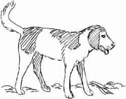
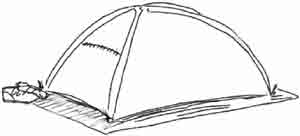

Family vacation is here and you can’t wait! But stop. Are you going to have a fun time by doing whatever you want, or what Jesus wants you to do?
The Choice is Yours
#1. “We’re planning on a 3-day camping trip,” Dad says. “But we have two places to choose from.”
- Willow Lake is closer, but more expensive. Go to #8.
- Black Bear Creek is more rugged and not as convenient. Go to #11.
#2. Mom calls you carry the sleeping bags, and then the tents have to be set up. You haven’t even touched the water yet!
- You pray to help cheerfully, then ask about the plans. Go to #19.
- You dawdle and try to get out of the work. Go to #14.
#3. “I’m sorry to hear bickering,” Dad says. “This is not getting us to a happy start.” You must sit beside Baby, and the trip begins.
#4. Dad hears your calls and rescues you, but you can’t play by yourself anymore. Jen and you fish from the shore and get 3 bass for lunch. Go to #32.
#5. The ride to Willow Lake doesn’t take long, and you’re glad to find a site near the water.

#6. The dog waits outside in the early morning light. He barks and leads you to a steep trail. Go to #30.
#7. Everyone starts planning how to have a good time. With a raft and fishing supplies, all is ready. Wait! Bobby wants his sailboat.
#8. Mom and Jen like the idea, too. But Bobby thinks it will be boring. You say:
#9. “One question at a time!” Dad says, “but be ready for a long drive.” You sit beside Bobby, with the dog by the window.
- “Bobby’s hogging all the room!” you say. Go to #3.
- You’re warm and fall asleep leaning on the dog. Go to #20.
#10. It’s morning and you’re in a tent! How will you start the day?
- Pray for help. Go to #17.
- You hop outside to see the day. If at the creek, go to #6. At the lake, go to #27.
#11. Bobby looks eagerly at the map. Mom asks, “Will it be too far away?” You say:

#12. By the last bit of strength you get on the bank. You feel sick, and have to rest in the tent while the others have fun. THE END
#13. Dad decides Black Bear Creek will be a better choice. Go to #11.
#14. Your bad attitude doesn’t help anything—and the tent floor feels hard that night. Go to #10.
#15. There are tall trees and many birds to see. With a lovely picnic in a meadow, the hike is great. You get back in time for some chili and cookies. THE END
#16. “Want to see the sunrise?” Dad says. You sit on a log, enjoying the view until breakfast.
#17. With a smile, you get up to help with breakfast.
#18. Sputtering from the spray, you try baling water. The raft sinks, so you jump out.
#19. “How about blowing up the raft?” Dad suggests. Soon your toes are trailing in the clear cold water while Jen paddles. Go to #22.

#20. You stop by a forest trail marked, “Black Bear Creek—no fires permitted.”
#21. Snarling, the raccoon starts snapping, and both you and the dog get scratched up trying to get away. You get bandages and camp confinement. THE END
#22. Camping is wonderful! you think as you sing and drink hot cocoa that night. It’s not even dark when Dad says, “Bag-time for children.” You say:
#23. You follow a deer path to a meadow, and then climb some rocks. Looking around, you can see a tent, but it’s not yours. Go to #28.
#24. Later Dad, Jen, and you go on a raft ride and watch Bobby sail his boat. After lunch you go wading and find a turtle. Go to #32.
#25. Mom pulls out the propane stove. Bobby points out a good site and everything is soon set up. It is late, so you go to bed after supper. Go to #10.
#26. Soon you’re snuggled down with a backpack, hiking clothes, books, and the dog. It’s crowded and tiring, but at last the bumpy ride ends. Go to #20.
#27. The raft is floating on the lake, but it is low on air. You push out anyway, heading for a jutting rock. An outboard motor whooshes by and water pours in. Go to #18.
#28. The dog runs up to a short lady. She sends you back to your camp, and Mom keeps you near the rest of the time. THE END
#29. Dad is planning on a 2-mile hike with Bobby and you. The dog joins up, and you start off with a picnic lunch. Go to #15.
#30. As you slip down a steep bank, you see that the dog has found a raccoon by a small pool.
- You call the dog and head around the pool. Go to #23.
- You hurry to get Dad. Go to #29.
- You get a stick and join the fight, trying to scare it. Go to #21.
#31. It is still dark when there’s a scratching at the tent.
#32. That night you play campfire games. What fun this trip has been! THE END
